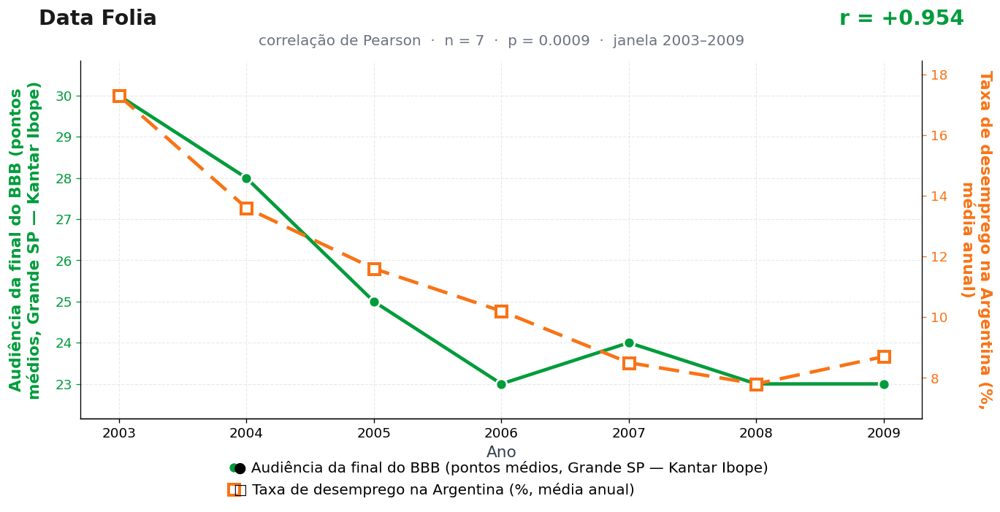

Post de 19/10/2026
A teoria
A final do BBB cria um silêncio social raro. Milhões de pessoas entram no mesmo ritmo de espera, comentário e decisão, e essa concentração atravessa fronteiras culturais.
Buenos Aires recebe a onda como desaceleração de agenda. Reuniões perdem urgência, contratações aguardam o clima da região e o mercado de trabalho passa a operar no compasso do sofá brasileiro.
O entretenimento vira base emocional. A televisão marca o tempo, a conversa pública reorganiza prioridades, e a economia argentina ajusta o passo até o país voltar a falar de outra coisa.
Buenos Aires nega oficialmente parar para assistir a paredão. As reuniões de terça de manhã na capital portenha, porém, seguem misteriosamente esvaziadas em semana de final — dado que não coletamos, mas que o modelo considera plausível por solidariedade.
A teoria é ficção; a correlação é real: r = 0,95 (n = 7, p = 0,001).
Os dados por trás

- Audiência da final do BBB (pontos médios, Grande SP — Kantar Ibope) — 7 pontos anuais, período 2003–2009. Fonte: Kantar Ibope / Globo / Notícias da TV.
- Taxa de desemprego na Argentina (%, média anual) — 7 pontos anuais, período 2003–2009. Fonte: World Bank / INDEC.
Como as correlações deste site são encontradas — e por que você não deve confiar nelas — está explicado na nossa metodologia.
Por que isso acontece?
Entre 2003 e 2009, as duas séries descem juntas por caminhos que nunca se cruzam. A audiência das finais do BBB cai de 30 para 23 pontos acompanhando um fenômeno mundial: a fragmentação da TV aberta com a chegada da internet, da TV paga e do streaming embrionário. O desemprego argentino cai de 17,3% para 8,7% porque o país se recuperava da crise de 2001. Duas descidas paralelas, um r = 0,95, nenhum contato.
É a correlação espúria por tendência comum: o tempo empurra as duas curvas na mesma direção e o coeficiente de Pearson registra o paralelismo como se fosse parentesco. Metade das séries econômicas e culturais dos anos 2000 desce ou sobe em bloco — cruzá-las aos pares gera manchetes infinitas, e este site agradece.
Some o n = 7 e a seleção a posteriori (publicamos este par porque o r saiu alto, não porque havia hipótese prévia) e o p = 0,0009 vira o que sempre foi nestas páginas: figurino.
Post de 19/10/2026 · publicado também no Instagram @datafolia.